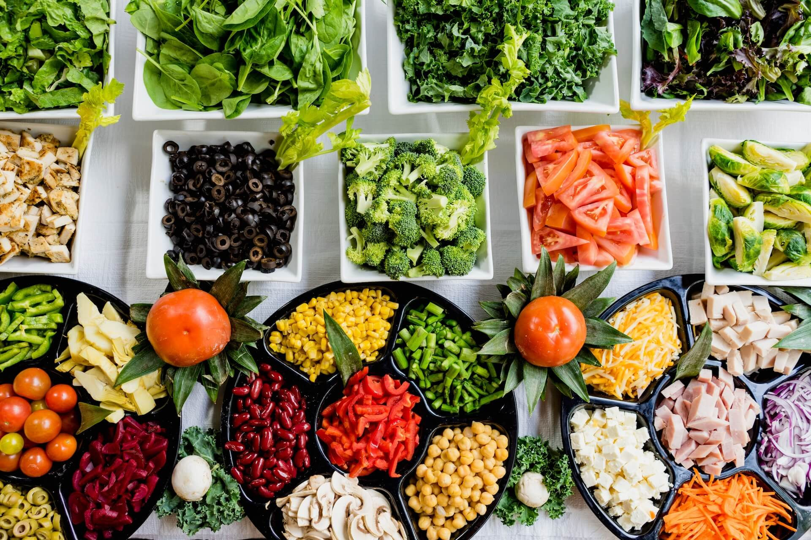

Postpartum Nutrition: Recovery and Nourishment
Many new mothers experience postpartum depression (PPD), which is a prevalent but frequently underappreciated problem. Although there are many reasons that led to its emergence, a new study indicates that nutrition is critical for reducing symptoms and supporting mental health during this vulnerable postpartum phase. The new mother's postpartum depression is not a weakness or a shortcoming. Although there isn't a single underlying medical ailment that causes postpartum depression, a perfect storm of related disorders frequently does. It arises from a variety of causes, including deficits in nutrients, environmental stressors, and physical traits. Postpartum nutrition is crucial for assisting mothers in their postpartum recovery. It has been demonstrated that a thorough, nutrient-dense meal plan reduces the incidence of mood disorders and postpartum depression, in addition to aiding in postpartum recovery.
November 11, 2023
According to research, a parent's depression can rise dramatically from the time they are expecting until a year after giving birth due to dietary deficiencies. During this period, several nutrients are required to support immune system function, gastrointestinal health, hormone balance, and neuroendocrine function. Postpartum Depression may also occur due to deficiencies of some nutrients such as: B-Vitamins; Essential Fatty Acids; Folate and Trace Minerals; Vitamin D.The deficiencies of these nutrients can cause impaired functioning of numerous bodily systems and raise the risk of mental disorders like postpartum depression if they are depleted during pregnancy and not sufficiently supplied during the postpartum period. After becoming pregnant and giving birth, new mothers can lower their chance of developing mental health issues adhering to a postpartum nutrition plan.
Impact of Dietary Habits on Postpartum Depression
1. Healthy Fats
Research has shown a correlation between decreased incidence of depression and diets high in omega-3 fatty acids. Walnuts, flaxseeds, and fatty fish are great sources. These necessary fats support mental health and may be beneficial for controlling mood.
2. Complex Carbohydrates
Choosing whole grains or other complex carbs helps control blood sugar levels. Blood sugar fluctuations have been linked to mood swings, and new mothers need to make sure they have a consistent source of energy.
3. Foods High In Protein
Getting enough protein helps the body produce neurotransmitters like serotonin, which is linked to mood control. Nuts, beans, dairy products, and lean meats are excellent sources of protein.
4. Vitamins And Minerals
Make sure your intake of these nutrients is well-balanced. Particularly vitamin D has been connected to mood disorders, so getting enough sunshine or eating foods high in vitamin D can be helpful. B vitamins and iron also affect mood and are involved in the metabolism of energy.
5. Hydration
Although it is sometimes forgotten, maintaining adequate hydration is essential to general health. Dehydration can make you feel more tired and irritable, as well as reduce your energy levels.
6. Cutting Back On Sugar And Caffeine:
Consuming too much sugar and caffeine can cause energy dumps and interfere with sleep cycles. Choose moderation in order to keep your energy levels consistent all day.
7. Probiotics And Gut Health:
New study points to a connection between mental health and gut health. Adding probiotics to your diet through fermented foods or yogurt can help improve your mood and the gut-brain axis.
In conclusion
A comprehensive approach to mental health during the postpartum time may benefit from adopting a balanced and nutrient-dense diet. It is crucial for new moms to put self-care first and speak with medical professionals to customize their diets to meet their unique requirements.